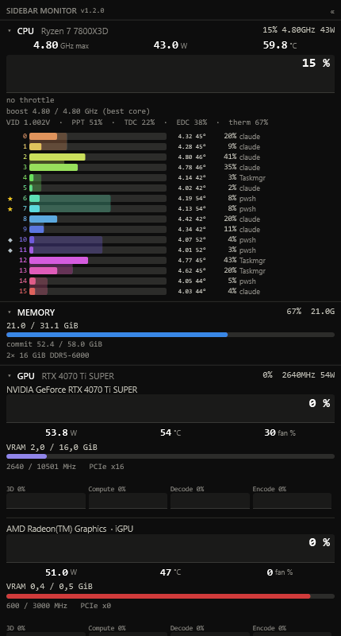
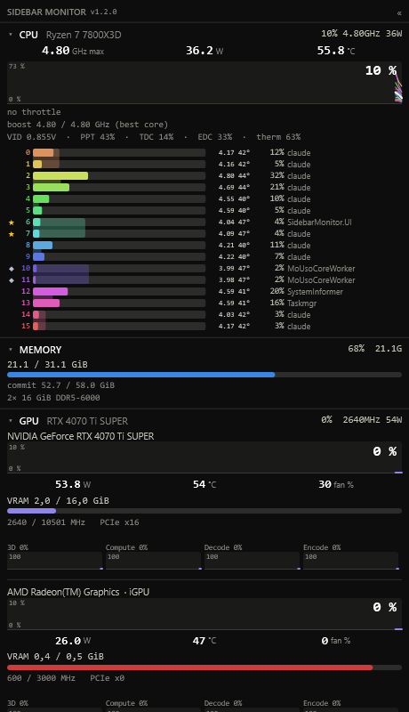
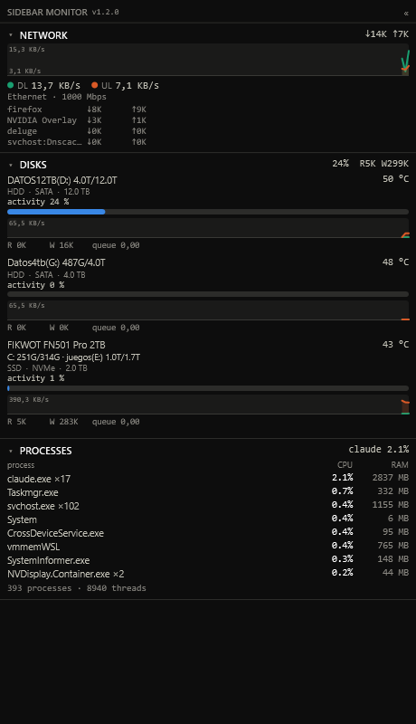

CPU, per-core, GPU, memory, network, disks, processes and game FPS in one lean panel — dock it to any monitor's edge or float it wherever you like. No kernel driver of its own, no HWiNFO dependency, no telemetry.

In 2025, Windows added the WinRing0 kernel driver to its vulnerable-driver blocklist. Hardware monitors that read sensors through it stopped working on machines with Memory Integrity / Core Isolation (HVCI) enabled. SidebarMonitor takes a different route by design: it ships no kernel driver of its own and reads sensors through signed, HVCI-safe paths — the AMD Ryzen Master Monitoring SDK, NVIDIA NVML, AMD ADLX, Intel's PresentMon and native Windows APIs.
Runs with Memory Integrity on — the whole reason it exists. No WinRing0, no kernel driver of ours.
The sampling agent is a NativeAOT binary: ~2 MB, ~60 ms cold start, allocation-free hot path.
Per-core frequency, temperature and C0/sleep residency; best-core marker; power caps (PPT/TDC/EDC); throttle state.
Full telemetry for NVIDIA (NVML) and AMD (ADLX), plus per-engine activity for any GPU via D3DKMT.
FPS, frametime, 1% and 0.1% lows via Intel's PresentMon (ETW) — no overlay, no anti-cheat trouble.
Nothing leaves your machine. No analytics, no crash reporting, no network activity in normal use.


Everything renders on any Windows 11 x64 machine, and the app degrades gracefully when a source is missing.
| Feature | Needs | Without it |
|---|---|---|
| CPU temp / power / per-core temp / throttle | AMD Ryzen + Ryzen Master SDK (accepted on first run) | Those fields show “—”; Intel is detected and explained. |
| NVIDIA GPU temp / power / fan / VRAM | NVIDIA driver (NVML) | Per-engine activity via D3DKMT. |
| AMD GPU temp / power / fan / clocks / VRAM | AMD Adrenalin driver (ADLX) | Per-engine activity via D3DKMT. |
| Per-core process colours, per-process network | The elevated helper | Bars still show usage; no per-process attribution. |
A NativeAOT agent samples sensors unelevated and publishes to shared memory via a lock-free seqlock. An optional elevated helper runs the kernel ETW session and the AMD SDK. The WPF panel renders it — docked or floating, resizable, click-through. WPF can't be AOT-compiled and the helper needs a different elevation manifest, so keeping them separate keeps the agent native and unelevated. Read the architecture →
SidebarMonitor collects nothing and sends nothing. It samples local hardware and renders it — no analytics, no crash reporting, no sockets to any server. Your settings and logs stay on your disk. Privacy policy →
Grab the latest installer from GitHub Releases, or build it yourself from source.
Bundles AMD's sensor SDK, so full CPU telemetry works offline with no extra steps.
Ships none of AMD's binaries — it uses the Ryzen Master SDK you install yourself. Smaller download; CPU falls back to basic metrics without it.
Windows 11 · x64 · Free & open source (MIT). Builds aren't code-signed yet, so Windows SmartScreen may warn on first run — choose “More info → Run anyway”.